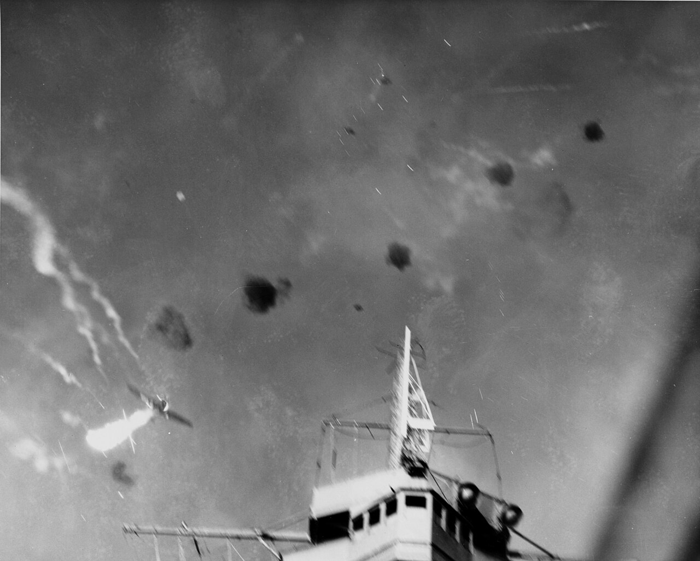
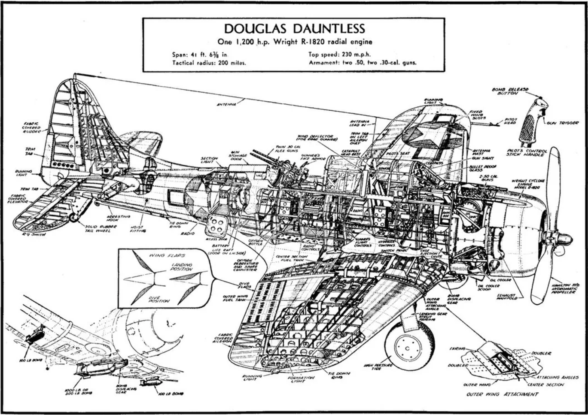
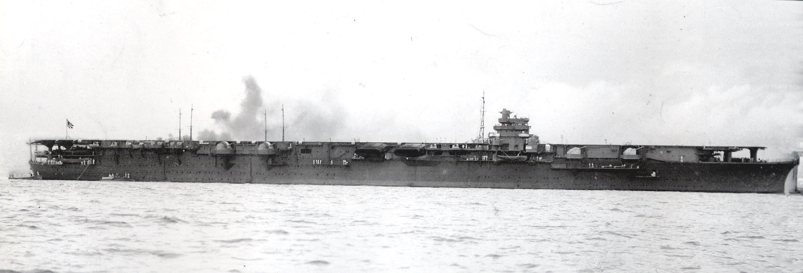
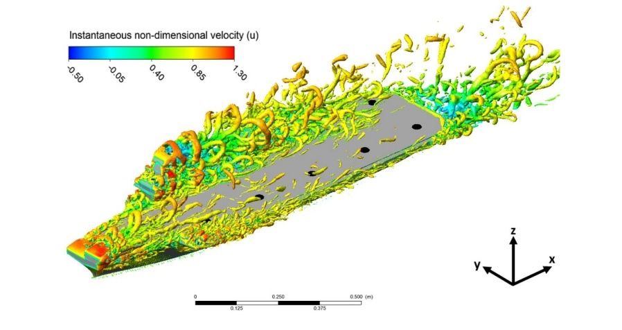
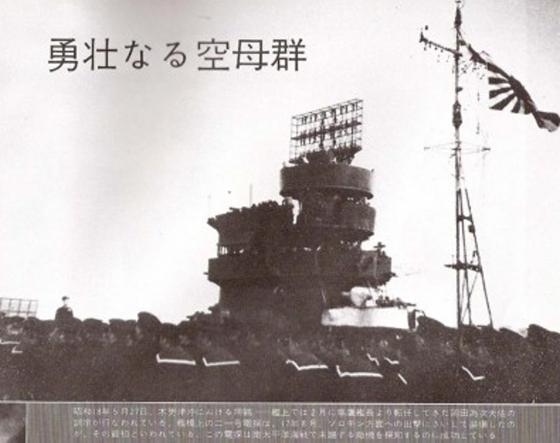

과달카날에서의 레이더 (8) - 쇼가꾸의 레이더
게시: 2024-03-28T06:30:26+09:00
<조종사 말은 걸러 들어라> 이렇게 폭탄을 3방이나 얻어맞은 엔터프라이즈는 레이더에 의한 조기 경보를 받은 덕분에 뛰어난 damage control을 수행할 수 있었고, 결국 잘 수습하여 공습이 끝난 뒤 불과 1시간 만에 엔터프라이즈는 다시 함재기 이착함이 가능해짐. 엔터프라이즈는 자력 항행하여 진주만으로 철수했고, 거기서 1달 정도 수리를 받고 다시 남태평양으로 돌아옴. 그렇다고 해서 피해가 경미했던 것은 아니었고, 수십 명의 승조원들이 사망하고 더 많은 수가 부상. 와일드캣 전투기들 피해는 6대 뿐이었는데, 그 중 4대가 아군 대공포에 의한 격추였음. 이건 오인 사격이 아니었음. 일부 와일드캣들은 속절없이 적기를 놓쳤다는 죄책감에서인지, 다이빙하며 돌입하는 발 폭격기들의 뒤를 쫓아 아군의 맹렬한 대공포 화망 속으로 뛰어듬. 덕분에 무려 4대의 와일드캣들이 미군 대공포 사격에 격추됨.

(1942년 8월 24일, 엔터프라이즈 바로 위에서 대공 사격에 맞아 격추되는 일본해군 'Val' D3A 급강하 폭격기. WW2 태평양 전선에서 미해군의 대공포 사격은 의외로 막강하여 사정거리 내로 들어온 적기의 36% 정도가 대공포에 의해 격추되었다고. 물론 이는 나중에 근접신관이 도입되면서 향상된 수치이고, 비록 기습 상황이긴 하지만 진주만에 쳐들어온 353대의 일본 항공기중 29대만 격추됨.) 하지만 이런 헌신적인 용기 덕분에 미해군은 매우 많은 수의 일본기를 격추. 무려 70대를 격추했는데... 물론 언제나 그렇지만 이는 조종사들과 대공포 사수들의 허풍과 과장. 엔터프라이즈에 쳐들어온 일본기는 제로센까지 다 합해도 37대에 불과했기 때문. 그 중 실제 격추는 25대였음. 그러나 이 정도의 격추만 해도 쇼가꾸와 즈이가꾸의 항공대에게는 큰 손실. 거기에 항모 이착함에 흔히 있기 마련인 운용상의 실수, 고장, 여러가지 악조건 등으로 인해 추가적인 손실도 꽤 있어서 쇼가꾸와 즈이가꾸는 더 이상 미해군 항모를 추격하지 않고 회황. 아무리 그래도 항모 2척 전체 항공대의 1/3 정도 잃었다고 회항을 한다고? 이건 미해군 조종사들 못지 않게 일본해군 조종사들도 허풍과 과장이 심했기 때문. 대체 왜 그런 거짓말을 했는지 모르겠으나, 살아돌아간 일본해군 조종사들은 엔터프라이즈 1대가 아니라 항모 2대에게 큰 타격을 주어 대파했다고 보고. 게다가 대체 왜 그렇게 생각했는지 더욱 모르겠으나, 2대 중 1대는 도쿄에 폭격을 가한 둘리툴 폭격대를 발진시킨 USS Hornet이었고 호넷은 결국 침몰했다고 평가. 거기에 만족한 나구모가 회항한 것. <미국인들은 눈이 나쁜가?> 결국 이 동솔로몬 해전은 미해군측의 전략적 승리. 미끼이긴 했지만 일단 경항모 류조가 격침되었고, 결국 일본해군은 과달카날에 상륙부대를 상륙시키지 못했기 때문. 그러나 전술적으로 보면 엔터프라이즈+사라토가 vs. 쇼가꾸+즈이가꾸의 대결은 일본측의 전술적 판정승. 항모 싸움에 있어서 중요한 것은 누가 먼저 보고 먼저 때리느냐 하는 것인데, 미해군은 쇼가꾸+즈이가꾸에게 슈팅조차 못해보고 전투가 끝났기 때문. 왜 그런 결과가 났을까? 미해군 항모들에는 레이더가 있으니 어느 방향에서 일본기들이 날아오는지 볼 수 있었으므로, 그 방향으로 폭격대들을 날려보내기만 하면 될텐데? 이건 결국 타이밍과 운의 문제였음. 엔터프라이즈+사라토가에게 일본 폭격대가 날아들 때, 사라토가의 폭격대는 류조를 두들겨 패고 있었음. 그리고 엔터프라이즈의 돈틀리스 SBD들 대부분은 쇼가꾸+즈이가꾸를 찾아 사방으로 흩어져 정찰 중이었음. 그러니 일본기들이 날아오는 방향으로 폭격대를 날리지도 못했고, 또 날린다고 해도 적 제로센들이 잔뜩 날아오는 방향으로 곧장 날리지도 못했음.

(Dauntless SBD의 단면도. 왜 같은 함재 폭격기인데 급강하 폭격기인 돈틀리스만 정찰용으로 내보내고 뇌격기인 어벤저는 내보내지 않았을까? 같은 함재 폭격기가 아님. 돈틀리스는 2인승이고 자체 무게 4.2톤. 어벤저는 3인승이고 무게가 7톤이 넘음. 어벤저에 대해서는 다음에 좀 더 자세히.)
그런데 그 수십 대의 돈틀리스들은 왜 일본 항모들을 못 찾았을까? 정말 미국인들이 일본인들보다 눈이 나빠서 그랬을까? 당연히 아님. 쇼가꾸와 즈이가꾸의 함재기들이 엔터프라이즈를 향해 막 날아간 직후, 편대를 이루어 정찰 중이던 엔터프라이즈의 돈틀리스 2대가 본함에서 북쪽으로 약 400km 떨어진 위치에서 쇼가꾸와 즈이가꾸를 눈으로 확인. 이들은 즉각 항모 발견을 무전으로 엔터프라이즈에게 알렸을 뿐만 아니라, 가지고 있던 500파운드 폭탄으로 즉각 쇼가꾸를 향해 다이빙. 그러나 쇼가꾸가 뒤늦게 이 두 대의 폭격기를 발견하고 화들짝 놀라 급선회한 덕분에, 불행히도 이들의 폭탄은 모두 살짝 빗나갔고, 쇼가꾸는 이 near-miss 폭탄의 수중 폭발에 의한 충격파 외에는 큰 손상이 없었음.

(1941년 쇼가꾸의 모습. 일본 항모들은 저렇게 아일랜드(함교 구조물)가 작은데, 이건 일본해군은 무조건 공격적인 측면을 강조하느라 함재기의 이착함 편의에 몰빵했기 때문.)

(원래 함재기의 이착함 자체만을 놓고 본다면 아일랜드는 아예 없는 것이 가장 편리. 맞바람을 받으며 고속으로 항진하는 항모에 아일랜드가 있으면 그 아일랜드에 부딪힌 맞바람이 와류를 일으키기 때문.)

(사진은 몇달 전인 5월 8일 산호해 해전에서 요크타운의 급강하 폭격기의 폭격을 회피하는 쇼가꾸의 모습. 반원을 그리며 급선회 중인 것이 파도 궤적에서 보임. 보통 '덩치가 크기 때문에 재빠르게 움직이지 못하고 항공모함처럼 느리게 선회한다'라고 하는데 항모에게는 그것처럼 억울한 표현이 없음. 항모들은 저렇게 폭탄을 피하기 위해서 뿐만 아니라 이착함을 위해 바람 방향에 따라 재빨리 선회를 해야 하므로 선회력이 좋고 속력도 매우 빠른 편.) <레이더가 있으면 뭘하나> 그런데 평소 기민하기 짝이 없던 일본해군의 구축함들과 CAP 제로센들은 어쩌다 이들을 놓쳤을까? 거기에 대해선 별다른 설명이 없음. 그냥 아군 편대가 막 날아간 직후라서 긴장감이 떨어졌거나 뭐 그랬던 듯. 그런데, 그 많은 제로센 조종사들과 구축함의 견시들이 모두 놓치고 있던 그 2대의 돈틀리스를 정확히 잡아낸 일본군이 쇼가꾸에 타고 있었음. 바로 쇼가꾸의 레이더 운용사. 쇼가꾸에도 레이더가 있었다고?? 있었음. 과달카날로 파견되기 몇 주 전, 쇼가꾸엔 Type 21 Model 1 대공 레이더가 설치되었었고, 좁고 어두컴컴한 레이더 운용실에서 CRT 화면을 응시하던 일본 레이더 운용사는 정체를 알 수 없는 항공기를 포착하고 추적하고 있었음. 이것이 일본 해군이 실전에서 최초로 적기를 대공 레이더로 포착한 사건.

(Type 21 레이더가 장착된 일본해군 항모. 저 아일랜드와 그 뒤의 마스트 모습을 보면 이게 쇼가꾸 같은데... 잘 모르겠음. 주파수는 200 MHz라서 파장 길이는 1.5m이고, 약 100km 밖에서는 항공기 편대 정도를 탐지할 수 있었고, 항공기 1대 정도는 70km 안쪽까지 접근해야 탐지가 가능. 성능은 미해군 초기 실험용 레이더 정도의 수준. 무게는 840kg.) 그러나 이 운용사는 정작 상공의 제로센들에게 경고를 날릴 무전기도 없었고, 있었다고 해도 지시를 내릴 권한이 없었음. 심지어 함교의 나구모 제독에게 이 포착 사실을 알릴 내부 인터콤마저 없었음. 뿐만 아니라 이 정체불명의 항공기들이 대체 어느 방향으로 날아가는지 속력이 어느 정도인지 파악하기 위해 이들의 위치를 모눈종이 위에 표시하고 작도하고 계산할 공간과 인력이 부족. 그러다보니 그 위치와 속도를 계산하여 종이에 적고 전령을 통해 함교로 전달했을 때는 이미 돈틀리스들이 빗나간 폭탄에 대해 입맛을 다시며 도망치고 있었음.
결국 레이더가 있었음에도 아무 역할을 못한 것은 전적으로 당시 일본해군 수뇌부의 자질 문제. 전파전에 대해 아무 생각이 없었음. 흔히 장인은 연장 탓을 하지 않는다고 하는데, 이유는 간단함. 장인은 연장을 잘 알고 좋은 연장을 골라 쓰기 때문. 일본해군 제독들은 좋은 연장을 손에 쥐여줘도 쓸 줄을 모르는 인간들이었음. 한편, 이 2대의 돈틀리스로부터 정확한 일본 항모의 위치 보고를 받은 엔터프라이즈는 왜 이들을 향해 폭격대를 날리지 않았을까? 그건 다음 주에...